为什么需要一阶逻辑
你已经学完命题逻辑 + 自然推理系统 G'。命题逻辑用 p, q, r 这种"原子命题"加联结词 ¬ ∧ ∨ → 就能机械地判推理对错。问题是：命题原子是个黑盒。"所有的牛都有角"在命题逻辑里只能记成一个字母 p，它内部的"所有"和"牛"全被吞掉了。
本章在干什么：把命题原子拆开
一阶逻辑给你三样新工具，把命题打碎成更细的零件：
- 量词
∀（任意）、∃（存在）—— 抓住"所有/有些" - 谓词
P(x), Q(x,y)—— 把"x 是牛"、"x 有角"这种性质和关系暴露出来 - 项
x, c, f(x,y)—— 表示"个体"或"对个体做的运算"，比如0, S(x), x+y
本章只讲"语法"——下一章才讲"语义"
"语法"只关心"哪些符号串是合法公式"，不关心它什么时候真假。语义（怎么解读真假）放第 7 章。所以这一章你会反复看到：定义（怎么生成）→ 归纳法（怎么证明性质）→ 替换（怎么换变量）。
封面（跳过）
封面无内容。下页起进入正题。
动机例子：命题逻辑不够用
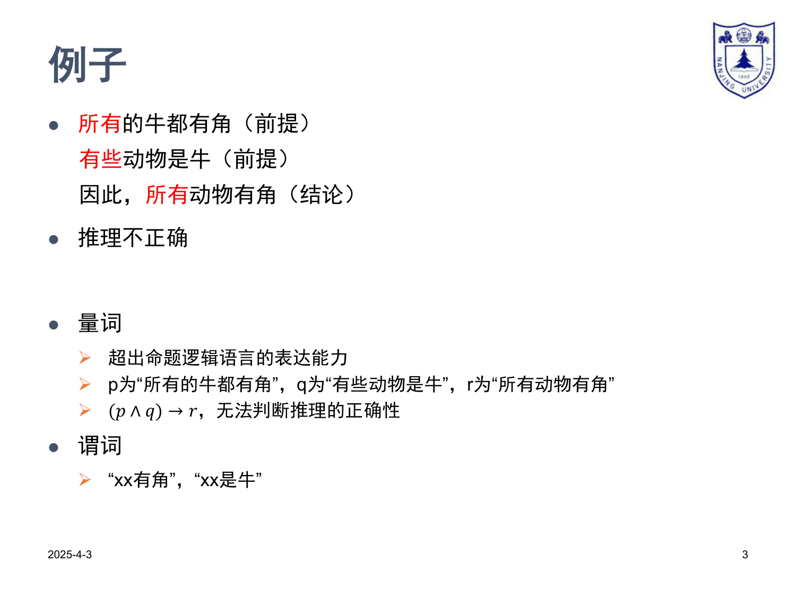
看这个推理
前提 1：所有的牛都有角。
前提 2：有些动物是牛。
结论：所有动物有角。
结论显然是错的——"有些动物是牛"只说一部分动物是牛，推不出全部动物有角。所以这是一个不正确的推理。我们希望逻辑系统能机械地把这种错抓出来。
用命题逻辑能抓到吗？不能
命题逻辑只能把三句各当成一个原子：
整个推理写成 (p ∧ q) → r。但 p, q, r 在命题逻辑里毫无关系，真假可任意指派，判断不了。结构信息（都涉及"动物""牛""角""所有""有些"）全被埋掉。
解药：把句子内部打开
- 量词：
所有→∀，有些→∃ - 谓词：
"xx 有角"、"xx 是牛"—— "带空位的属性"，填上对象才变命题
Leibniz 的梦想：让推理像算术一样机械
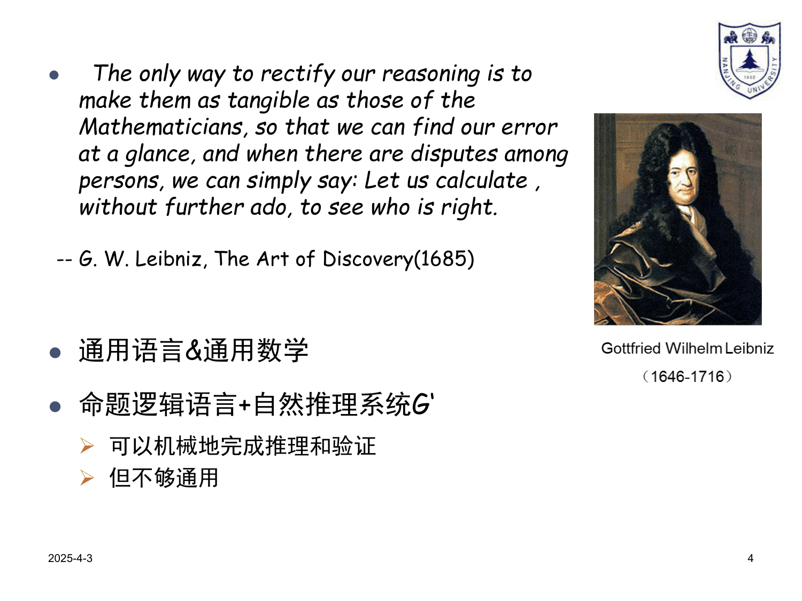
17 世纪 Leibniz 说：人推理常错，是因为推理不像数学"看得见摸得着"。要有通用语言+通用计算，吵架的时候说一句"咱算一下"就能见分晓。
命题逻辑+G' 实现了一半
- ✅ 机械化：G' 推理规则纯语法，按规则套就行
- ❌ 不够通用：表达力太弱——"所有/有些"完全套不进去
一阶逻辑 = G' 的"加强版"
保留命题联结词，再加量词 + 谓词 + 函数 + 等词 + 变元。这样几乎所有数学和日常推理都能形式化。叫"一阶"的原因：量词只量化个体（数、点、人……），不量化谓词或集合（量化谓词的是"二阶"，本课不学）。
分层全景图：字母表 → 项 → 公式
整章在搭一座 4 层金字塔，每层只能用下面那层做积木。
↑
第 3 层 · 原子公式 ：最小的有真假，形如
P(t₁,…,tₙ) 或 s ≐ t↑
第 2 层 · 项（term） ：名词——指对象，由变元/常元/函数搭
↑
第 1 层 · 字母表 ：原料——逻辑符 + 非逻辑符
关键比喻：项是"名词"，公式是"句子"
- 项像
x、3、x+y、f(g(x))——不能说真假，只"指向某对象" - 公式像
x < y、x ≐ 0、∀x. x+0 ≐ x——有真假可言
¬f(x)（否定套到项上）、f(x) ∧ g(x,y)（合取套到项上）—— 语法错误。联结词和量词只能套公式，等词和谓词只能作用在项上。9 个定义的角色分工
- 3.1 字母表 / 3.2 项 / 3.3 原子公式+公式
- 3.4 项的自由变元 / 3.5 公式的自由变元
- 3.6 项替换 / 3.7 公式替换
- 3.8 / 3.9 结构唯一性定理
定义 3.1（1）：逻辑符部分
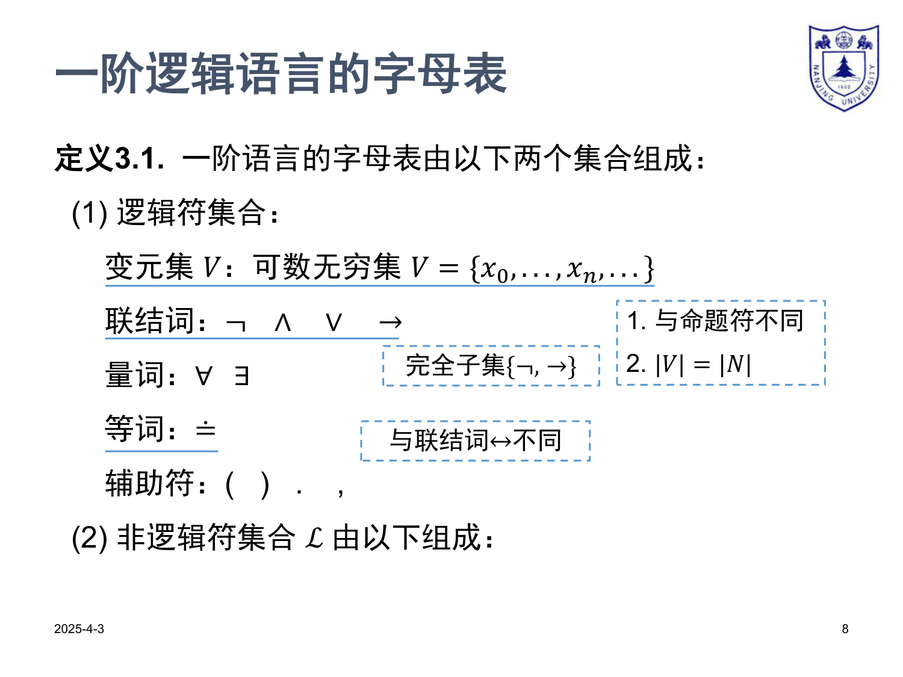
字母表 = 逻辑符（所有一阶语言共享）+ 非逻辑符（每种语言自己定）。先讲逻辑符。
逐项拆定义
- 变元集
V = {x₀, x₁, x₂, …}。可数无穷个变元——"和自然数 ℕ 一样多"。 - 联结词：
¬ ∧ ∨ →。 - 量词：
∀（全称，"对所有"）、∃（存在，"存在某个"）。 - 等词：
≐（等号上加一点）。表示"两个项指同一个对象"。 - 辅助符：
( ) . ,。只为消歧、分隔。
三条容易踩坑的细节
p, q 自身有真假；这里的变元 x 只指"某个对象"，本身不是真假，要等谓词包住它才有真假。{¬, →} 两个联结词就够（其余可定义出来）。列全 ¬ ∧ ∨ → 只是方便。等词 ≐ 不是双向蕴含 ↔
≐ 在两个项之间，s ≐ t 意思是"s 和 t 是同一个体"。双向蕴含
↔ 在两个公式之间，意思是"A 和 B 同真同假"。层级完全不同，别混。书中联结词集没列 ↔，可用
(A → B) ∧ (B → A) 定义。定义 3.1（2）：非逻辑符部分
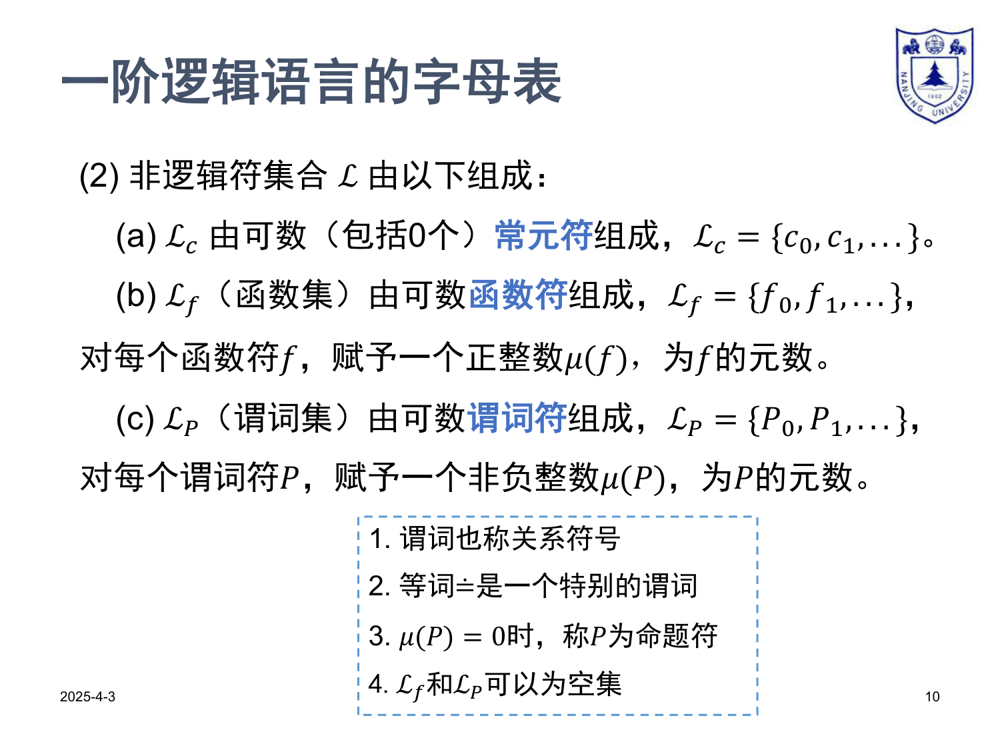
非逻辑符 ℒ 三个子集，每个一阶语言自己挑。"可数"= 有限或可数无穷，可以是空集。
(a) 常元符集 ℒc
ℒc = {c₀, c₁, …}。常元符代表"固定的具体对象"，比如算术里的 0、群论里的 e。
(b) 函数符集 ℒf
ℒf = {f₀, f₁, …}。每个 f 配一个正整数 μ(f)，叫元数（arity），意思"接几个输入"。例：
S（后继）μ=1：语义上S(n) = n+1+、·μ=2
(c) 谓词符集 ℒP
ℒP = {P₀, P₁, …}。每个 P 配一个非负整数 μ(P)。1 元谓词 = "属性"，2 元 = "关系"。
四条关键备注
- 谓词也叫关系符。n 元谓词 = n 元关系。
- 等词 ≐ 是特殊的谓词，但属于逻辑符。原因：所有"带等号一阶语言"里 ≐ 解释都一样。记带等号一阶语言为
ℒe。 - μ(P)=0 时 P 称命题符。0 元谓词 = 不接输入就有真假 = 命题原子。所以命题逻辑是一阶逻辑特例。
- ℒf 和 ℒP 可以为空。比如群论不需要谓词符（除 ≐）。
ℒ = ℒc ∪ ℒf ∪ ℒP。不同一阶语言的区别就在这个 ℒ。字母表的 6 条说明
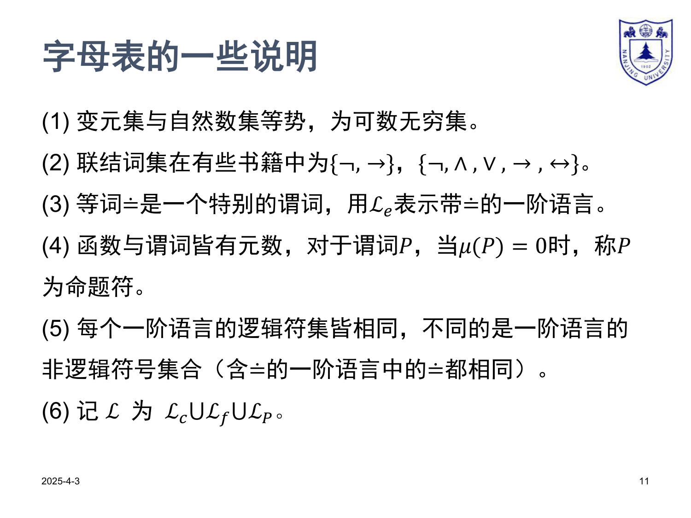
(1) 变元集与自然数集等势
"等势" = 存在 1-1 对应 = 和 ℕ 一样多 = 可数无穷。
(2) 联结词集的不同版本
{¬, →}（最精简）/ {¬, ∧, ∨, →, ↔}（最全）。本书 {¬, ∧, ∨, →}。
(3) ℒe = 带等号的一阶语言
≐ 不算非逻辑符。
(4) 元数 0 的谓词 = 命题符
命题逻辑是一阶特例。
(5) 逻辑符共享，非逻辑符各自定义
本节灵魂。差别只在非逻辑符。
(6) ℒ = ℒc ∪ ℒf ∪ ℒP
大写花体 ℒ 就指整个非逻辑符集。
为什么把字母表分两类
本质：通用 vs 领域专属。
逻辑符：所有一阶语言必须且共享
- 变元、联结词、量词、≐、辅助符——不涉及具体领域，是"逻辑机器"零件。
非逻辑符：每种一阶语言自己定
- 常元：领域里的特殊对象（0、e、∅……）
- 函数：领域里的运算（+ · S ⁻¹……）
- 谓词：领域里的关系（< ∈ ⊆……）
例：初等算术语言 𝒜
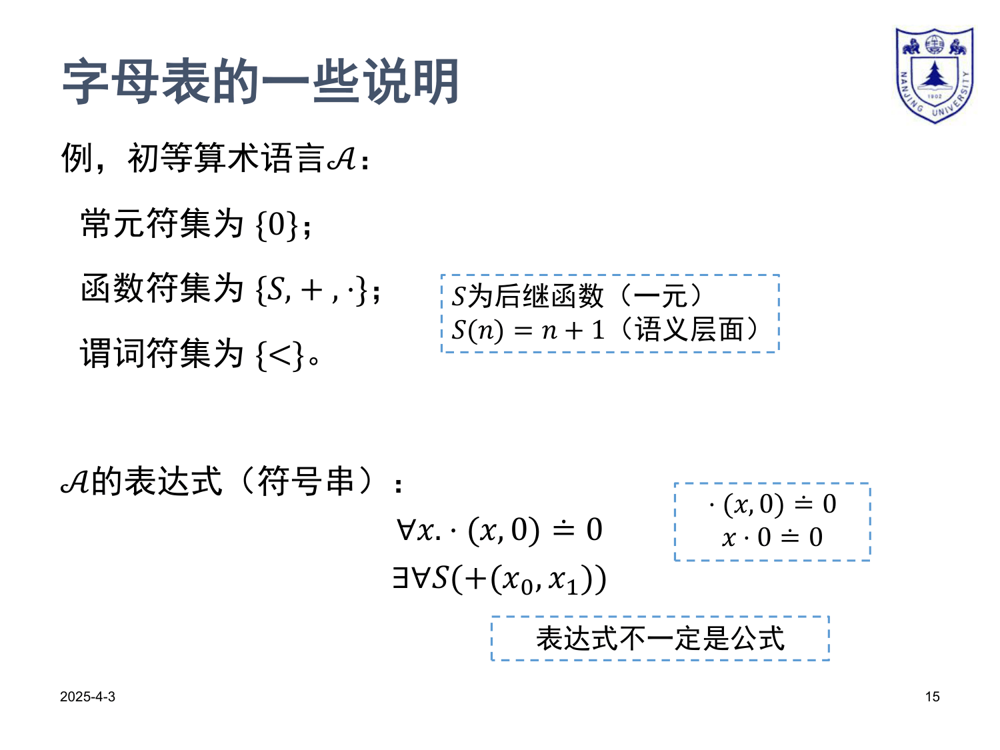
把皮亚诺算术（PA）的"操作系统"写成一阶语言。
𝒜 的非逻辑符
- 常元符集
ℒc = {0} - 函数符集
ℒf = {S, +, ·}S：1 元后继函数。语义上S(n) = n+1。自然数 1 写作S(0)，2 写作S(S(0))。+ ·：2 元加法 / 乘法
- 谓词符集
ℒP = {<}一个 2 元谓词"小于"
𝒜 的表达式举例
翻译："对所有 x，x · 0 = 0"。·(x, 0) 是"前缀写法"——函数符在前。日常写 x · 0 是中缀（只为人看着顺）。
这一行看着像有量词又有函数，但不是合法公式。
∃∀S(+(x₀, x₁)) 量词后没接公式、函数符外又套量词，违反语法。∀x.∀y. +(x,y) ≐ +(y,x)。例：群论语言 𝔊
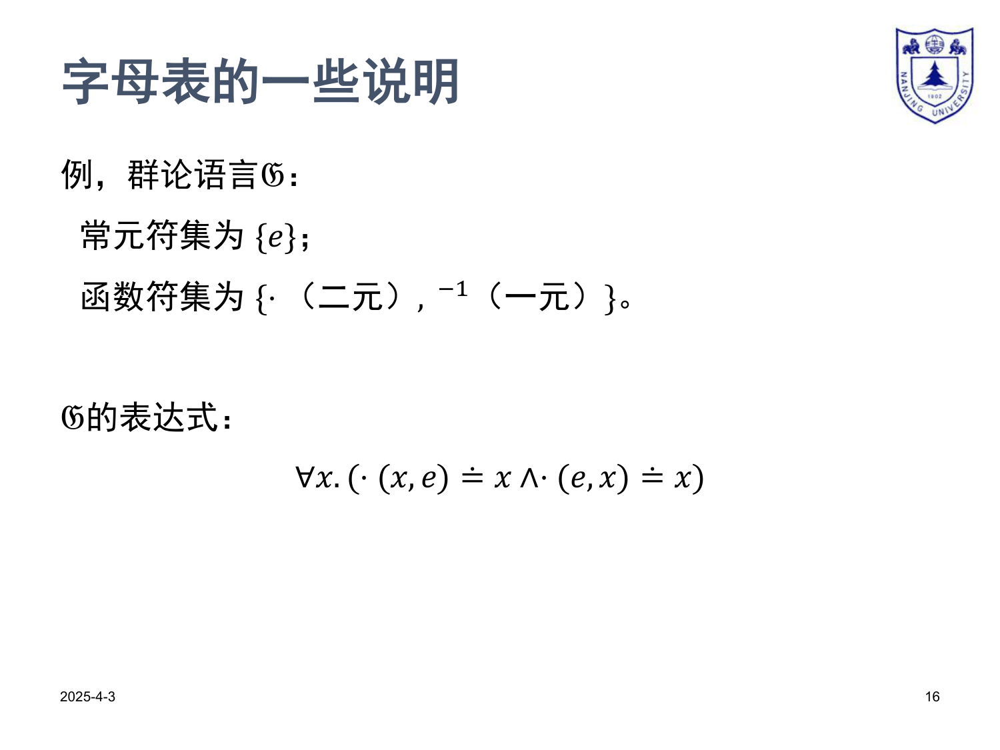
𝔊 的非逻辑符
- 常元符集
ℒc = {e}—— 单位元 - 函数符集
ℒf = {·（2 元）, ⁻¹（1 元）} - 谓词符集
ℒP = {}（空，群论除 ≐ 不需其他关系）
𝔊 的表达式
"对所有 x，x · e = x 且 e · x = x"——单位元左右恒等律。这是合法公式（下面会严格说）。
对比 𝒜 和 𝔊
| 𝒜（初等算术） | 𝔊（群论） | |
|---|---|---|
| 常元 | 0 | e |
| 函数 | S(1), +(2), ·(2) | ·(2), ⁻¹(1) |
| 谓词 | < | （空） |
| 共用 | 变元集、∀∃、¬∧∨→、≐、括号、点、逗号 | |
项 vs 公式：心智模型
这是整章最重要的概念区分。一旦在这里搞混，后面公式定义、自由变元、替换全都会乱。
两类语法对象的功能
| 项（term） | 公式（formula） | |
|---|---|---|
| 类比 | 名词 / 名词短语 | 陈述句 |
| 指什么 | 领域里的某个对象 | "某件事"——有真有假 |
| 例 | x, 0, S(x), x+y, f(g(x)) | x < y, x ≐ 0, ∀x. P(x) |
| 组装积木 | 变元、常元、函数符 | 项、谓词、≐、联结词、量词 |
为什么联结词不能套在项上
¬f(x) 想说什么？f(x) 是个对象（比如某个数），对"一个数"取否定毫无意义。否定只能否定一个"事"。 同理 f(x) ∧ g(x,y) ——两个对象做"且"也没意义。
分层规则（牢记）
f(t₁,…,tₙ)）项 → 原子公式：通过 ≐（
s ≐ t）或谓词符（P(t₁,…,tₙ)）公式 → 公式：联结词（
¬A, A∧B,…）、量词（∀x.A, ∃x.A）
下面定义 3.2、3.3 就在严格落实这套分层规则。
归纳定义 / 闭包定义 / BNF：三件套
定义 3.2 把"项"用三种等价方式定义了一遍。第一次看会觉得"为啥要重复三次？"——因为这是数理逻辑里描述归纳生成集合的三种标准技术，任何归纳定义的对象（命题逻辑公式、项、公式、证明树……）都可以这样三写。后面要反复用。
三种写法对照
| 名称 | 表述风格 | 读起来像 |
|---|---|---|
| 归纳生成 | "以下方式有限次使用生成的对象" | 逐步构造的过程 |
| 闭包定义 | "满足某条件的最小集合" | 静态地描述目标集合 |
| BNF | t ::= x | c | f(t,...,t) | 编程语言文法 |
为什么等价
- 归纳生成 → 闭包：所有"按规则一步步生出来的对象"恰好就是"包含基础元素+对规则封闭的最小集合"
- 闭包 → BNF：把封闭规则改写成产生式
各自适用场景
- 想计算/枚举对象 → 归纳生成
- 想证明性质（如"项 X 必然满足 R"）→ 闭包（用结构归纳法）
- 想写解析器或对照编程语言 → BNF
定义 3.2 项 · 三种等价写法
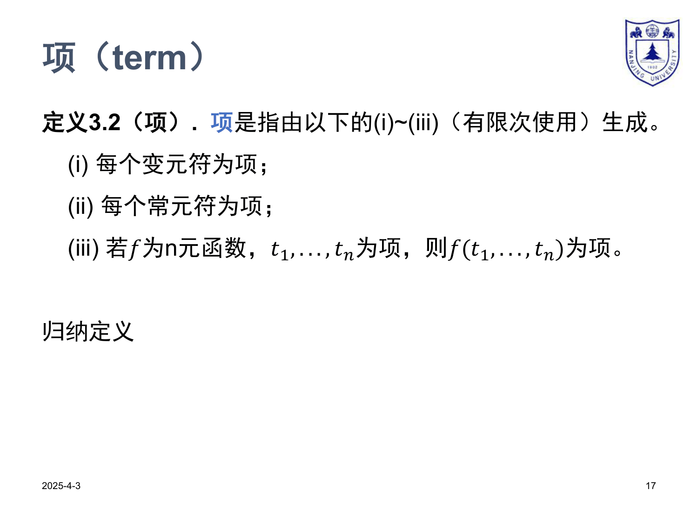
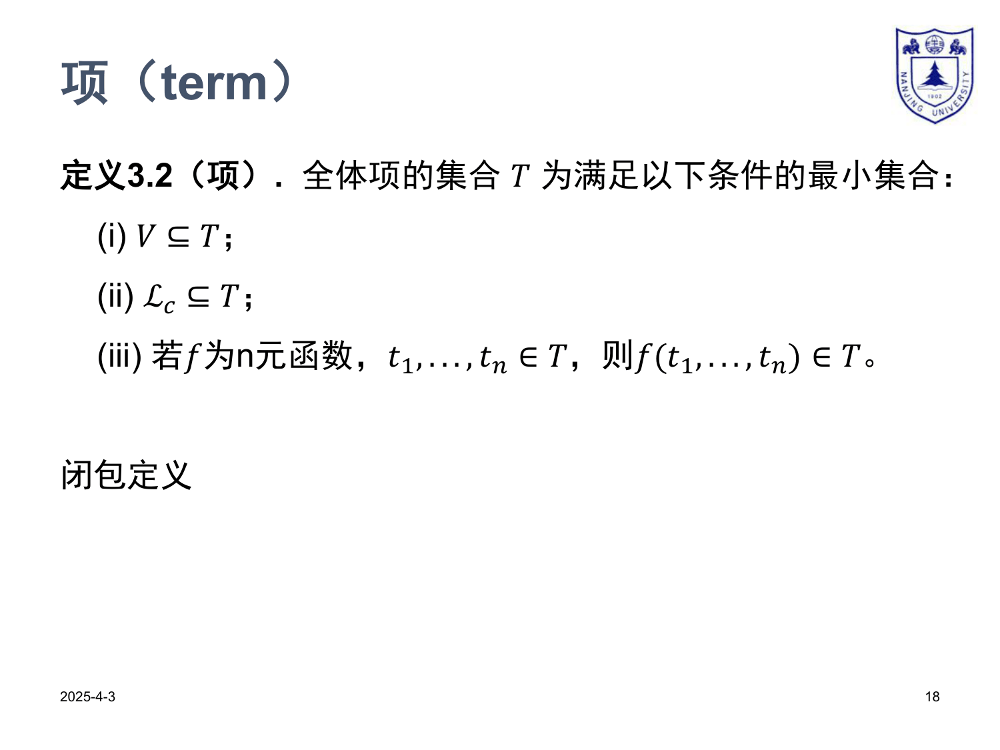
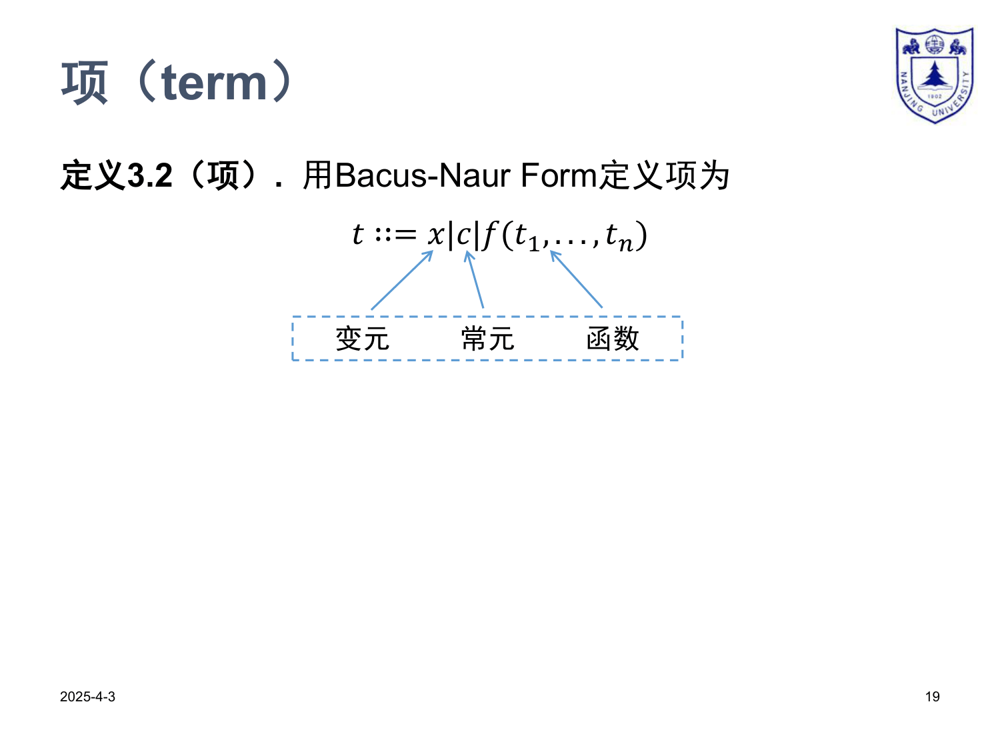
项（term） = 一阶语言里"表示对象的名字"。三种等价定义：
(i) 归纳生成式（PDF p17）
项由以下规则有限次使用生成：
- 每个变元符是项
- 每个常元符是项
- 若
f是 n 元函数符，t₁,…,tₙ都已经是项，则f(t₁,…,tₙ)也是项
(ii) 闭包式（PDF p18）
全体项的集合 T 是满足以下条件的最小集合：
V ⊆ T（所有变元都在）ℒc ⊆ T（所有常元都在）- 对 n 元函数
f，若t₁,…,tₙ ∈ T，则f(t₁,…,tₙ) ∈ T（关于函数符封闭）
"最小集合"——刚好涵盖所有按规则能造出来的项，多一个都不行。
(iii) BNF 式（PDF p19）
读法："项 t 要么是变元 x，要么是常元 c，要么是 f(t₁,…,tₙ) 这种形式"。| 是"或"，::= 是"被定义为"。
例子
在 𝒜（算术语言）里，下面都是项：
x₀（变元）、0（常元）S(0)、S(S(0))、+(x₀, 0)、·(x₀, S(x₁))
定义 3.3 公式 · 分层版（原子公式 + 公式）
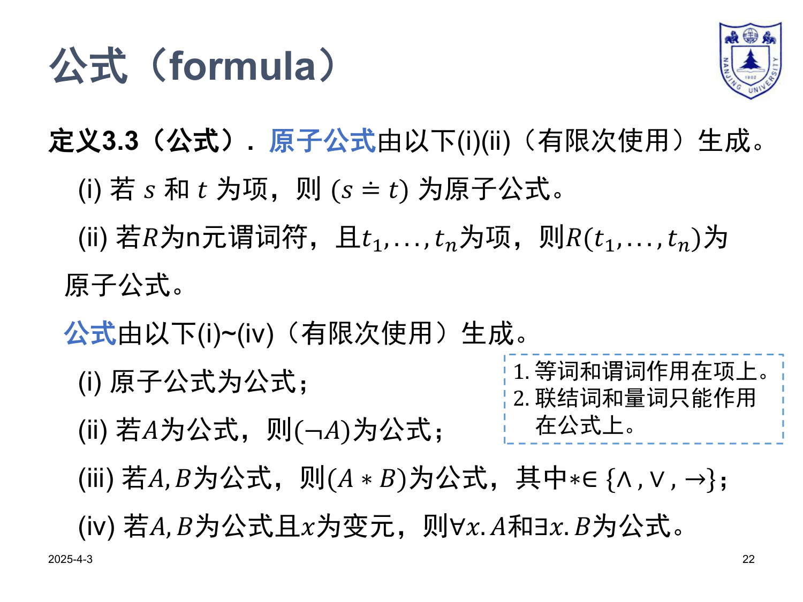
公式分两层定义。先定义"原子公式"（最小的有真假），再用它搭出一般公式。
(A) 原子公式（atomic formula）
- 若
s, t为项，则(s ≐ t)是原子公式 - 若
R为 n 元谓词符，t₁,…,tₙ为项，则R(t₁,…,tₙ)是原子公式
原子公式 = 项之间的"等于"或"关系"。是公式中最简单、不可再分的那种。
(B) 公式 = 原子公式按联结词、量词搭出来
- 原子公式是公式
- 若
A是公式，则(¬A)是公式 - 若
A, B是公式，则(A ∗ B)是公式，其中∗ ∈ {∧, ∨, →} - 若
A是公式且x是变元，则∀x.A和∃x.A是公式
两条灵魂规则
¬f(x) ✗ —— f(x) 是项，不能取否定f(x) ∧ g(x,y) ✗ —— 函数值是对象，不能做合取
2. 联结词和量词只能作用在公式上 → 得到更大的公式
∀x.A，点号 . 是辅助符，把量词和后面的公式分开（书中风格，有些教材没这个点）。定义 3.3 公式 · 合并版（5 条一气写完）
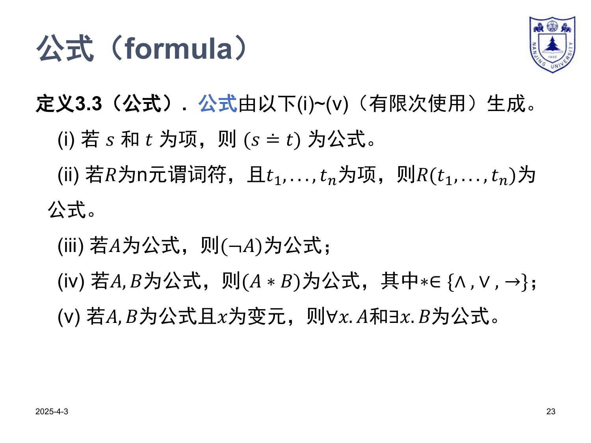
把"原子公式"和"公式"合并到一组归纳规则里。等价写法，结果同。
(s ≐ t)是公式R(t₁,…,tₙ)是公式(¬A)是公式(A ∗ B)是公式，∗ ∈ {∧, ∨, →}∀x.A和∃x.A是公式
定义 3.3 公式 · 闭包式
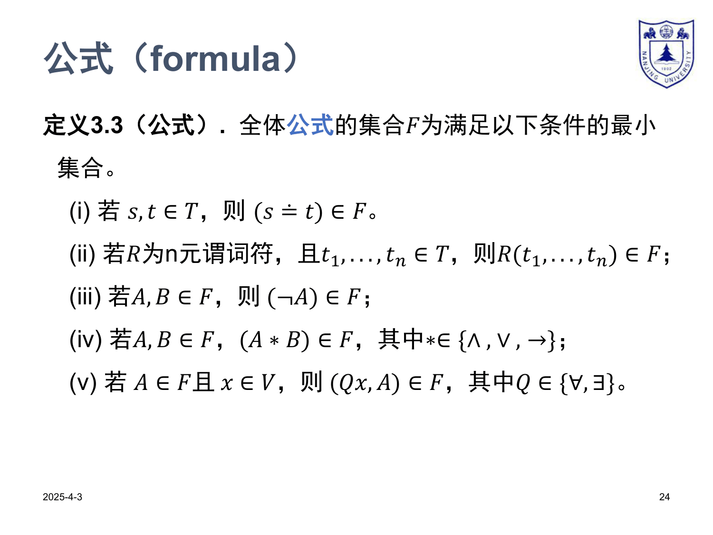
全体公式集 F 是满足以下条件的最小集合：
- 若
s, t ∈ T（项），则(s ≐ t) ∈ F - 若
R是 n 元谓词，t₁,…,tₙ ∈ T，则R(t₁,…,tₙ) ∈ F - 若
A, B ∈ F，则(¬A) ∈ F - 若
A, B ∈ F，则(A ∗ B) ∈ F - 若
A ∈ F且x ∈ V，则(Qx.A) ∈ F，Q ∈ {∀, ∃}
注意写成 (Qx.A)，把量词外面套了一层括号——为后面"括号引理"做准备。Q 是"量词变量"，可以是 ∀ 或 ∃。
定义 3.3 公式 · BNF 式
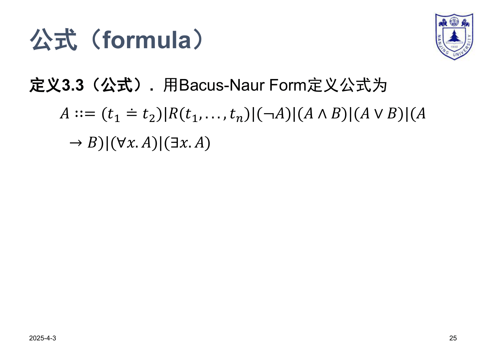
八种产生式，对应定义 3.3 的八种生成情形——后面定理 3.9 就在说"每个公式恰好属于这 8 种形式之一"。
群论公式与可读简写
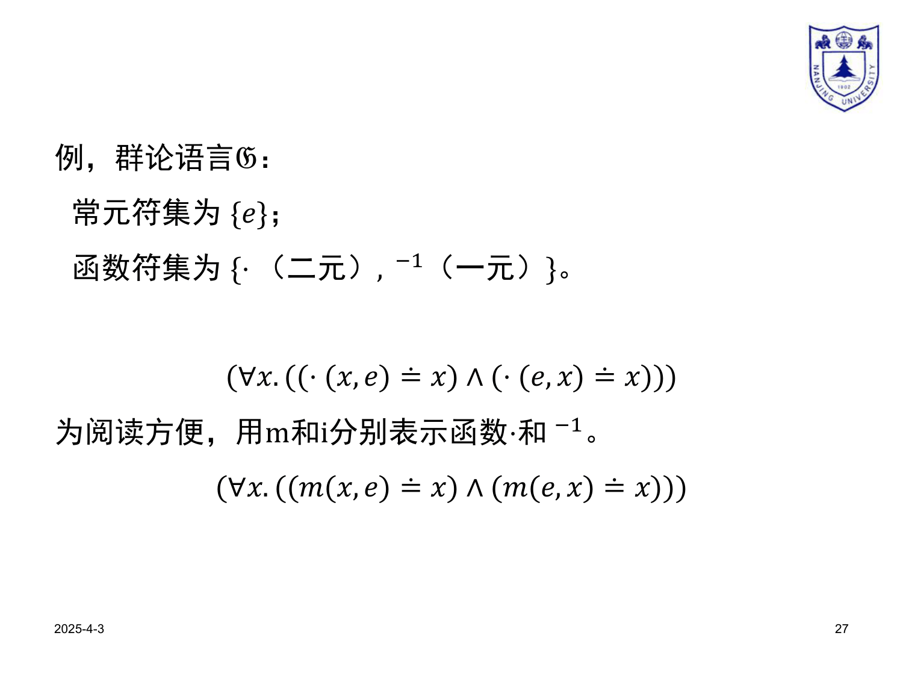
按定义 3.3，群单位元公式严格写成：
每个 ∧、每对 ≐ 都有外括号。合法但难读。为人类阅读方便，做两件事：
(1) 给函数符起别名
把 · 写成 m（multiply）、⁻¹ 写成 i（inverse）：
(2) 后面还会引入"括号简写约定"（见 p32）
到那时，上式能进一步精简为 ∀x. m(x,e) ≐ x ∧ m(e,x) ≐ x。
公式的语法树（生成树）
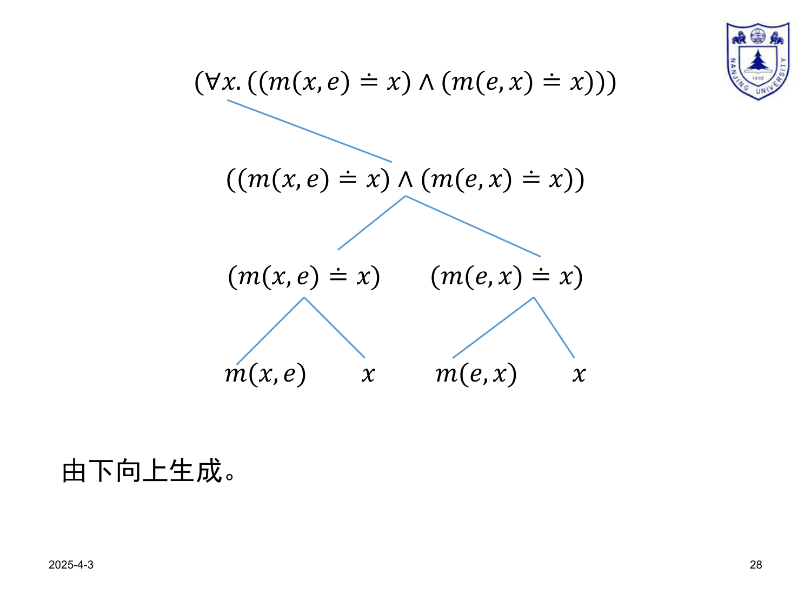
每个公式都对应一棵语法树（syntax tree / parse tree）：叶子是变元/常元，越往上越复杂，根是整个公式。
读图：从下往上生成
- 叶子层：
m(x,e), x, m(e,x), x（项） - 原子公式层：用 ≐ 把项配对 →
(m(x,e) ≐ x)、(m(e,x) ≐ x) - 合取层：两个原子公式用 ∧ 连起来
- 量词层：外面套 ∀x
为什么语法树重要
- 结构归纳法的依据：证明 "所有公式满足性质 R" → 沿语法树自底向上
- 结构唯一性（定理 3.9）的直观：每个公式只有一棵语法树
- 替换、自由变元 都是沿语法树递归定义
回扣：牛/角推理的一阶形式化
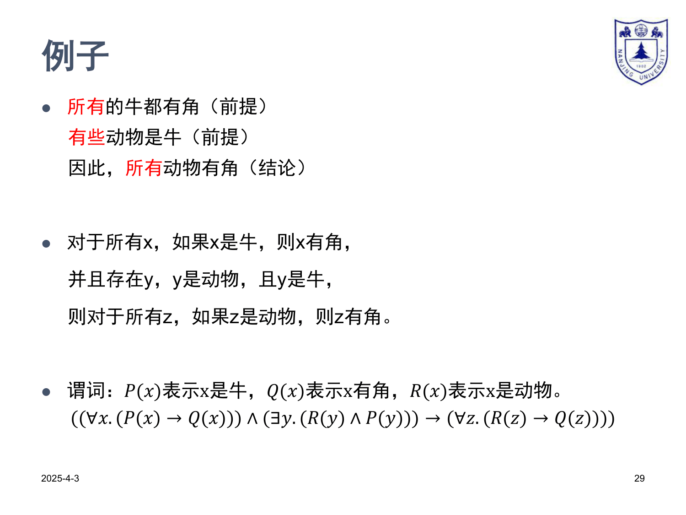
本章开篇那个推理，现在我们有工具把它写出来了。
选谓词
P(x)：x 是牛Q(x)：x 有角R(x)：x 是动物
三句话的形式化
- 前提 1（所有牛都有角）：
∀x. (P(x) → Q(x)) - 前提 2（有些动物是牛）：
∃y. (R(y) ∧ P(y)) - 结论（所有动物有角）：
∀z. (R(z) → Q(z))
整个推理
到下一章学语义后，会算出这个公式不是永真——也就是确实"推不出"。命题逻辑做不到的事，一阶逻辑做到了。
结构归纳法是什么
结构归纳法 = 数学归纳法在"递归定义对象"上的版本。
对比
| 数学归纳法（对 ℕ） | 结构归纳法（对项/公式） | |
|---|---|---|
| 基础 | n = 0 成立 | 所有最简形式（变元/常元 或 原子公式）成立 |
| 归纳假设 | n 成立 | 子项 / 子公式都成立 |
| 归纳步骤 | n → n+1 | 子项 → 用函数符生成；子公式 → 用联结词/量词生成 |
为什么有效
项和公式都是有限次规则生成的（看定义里的"有限次使用"）。语法树深度有限。从叶子（基础情形）到根（归纳步骤）走有限步，每步都保性 → 根上的对象也有性。
对项的结构归纳
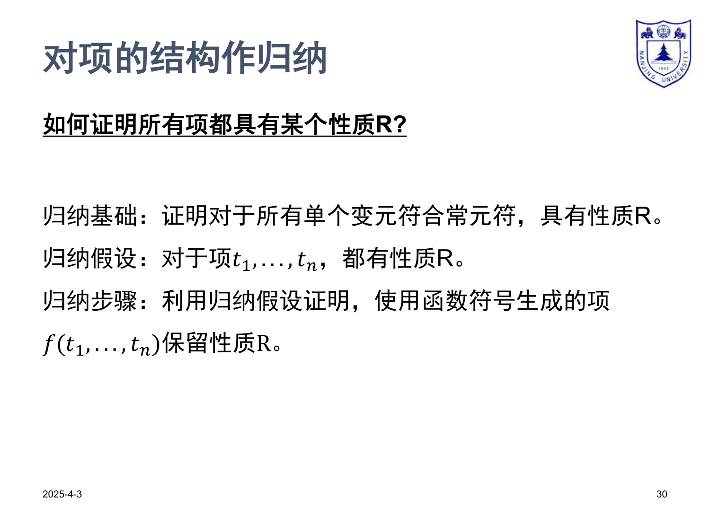
要证：所有项都满足某性质 R。三步：
归纳基础
- 证：每个变元符满足 R
- 证：每个常元符满足 R
归纳假设
假设项 t₁, …, tₙ 都满足 R。
归纳步骤
证：对任意 n 元函数 f，复合项 f(t₁,…,tₙ) 也满足 R。
对公式的结构归纳
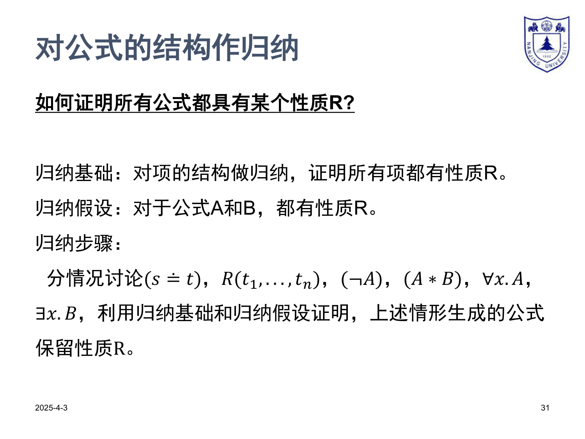
要证：所有公式都满足某性质 R。
归纳基础
先对项做归纳，证所有项有 R。然后证原子公式 (s ≐ t)、R(t₁,…,tₙ) 满足性质（这部分用项的结论）。
归纳假设
假设 A 和 B 都满足 R。
归纳步骤（分 7 种情形）
(s ≐ t)R(t₁,…,tₙ)(¬A)(A ∧ B)、(A ∨ B)、(A → B)∀x.A、∃x.A
每种情形都用基础和假设证：生成的新公式仍满足 R。
括号引理 & 简写约定
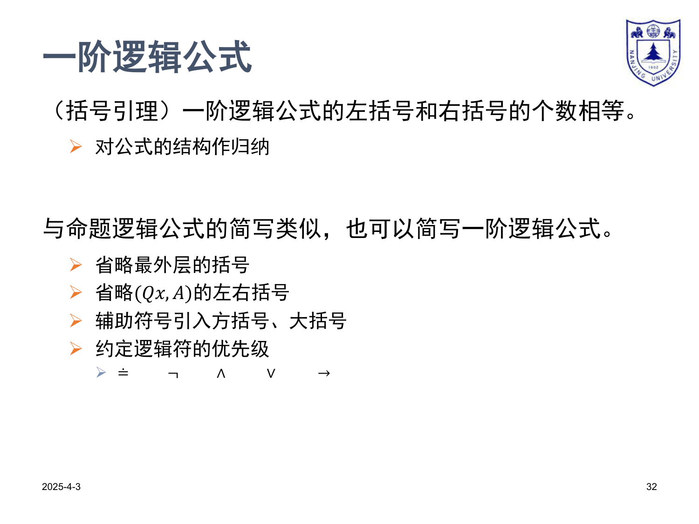
括号引理
一阶逻辑公式的左括号数 = 右括号数。证法：对公式结构归纳。基础情形原子公式里括号配对，每条生成规则都加配对的左右括号 → 归纳保持平衡。
简写约定（和命题逻辑同款）
- 省略最外层括号：
(A ∧ B)写成A ∧ B - 省略 (Qx.A) 的外括号：
(∀x.A)写成∀x.A - 用方括号、大括号 区分嵌套层次，便于阅读
- 联结词优先级（从高到低）：
≐>¬>∧>∨>→
A ∧ B → C 等价于 (A ∧ B) → C，因为 ∧ 优先级比 → 高。简写实例
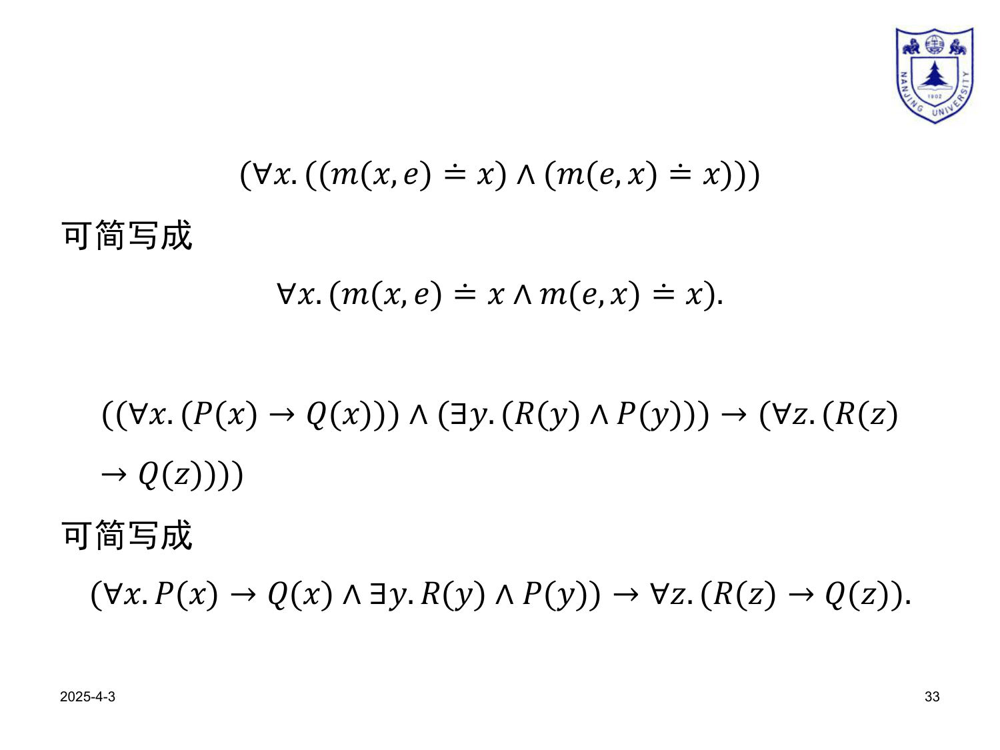
例 1：群论公式
简写为：
例 2：牛/角推理
简写为：
自由变元 / 约束变元：语义直觉
"自由"和"约束"是接下来三页的核心概念。先用编程类比把直觉建起来。
编程里的 scope
def f():
total = 0 # x 在外面没出现
for x in range(10): # x 在循环里"绑定"
total += x # 这里的 x 是"被绑定的局部变量"
return total + y # 而 y 没在函数内绑定 → 是外部传进来的
对应到一阶逻辑：
- 循环
for x in …= 量词∀x.（或∃x.）—— 它绑定了 x - 循环内的
x= 约束出现（bound） - 不在量词作用范围内的
y= 自由出现（free）—— 像函数的"参数"，等待外面填值
意义
- 没有自由变元的公式叫句子（sentence）—— 自带完整真假含义，不需要"额外填值"
- 有自由变元的公式真假依赖"自由变元怎么取值"—— 还不是个完整命题
- 替换就是把"自由变元"的位置换成具体项；约束位置不动
定义 3.4：项的自由变元 FV(t)
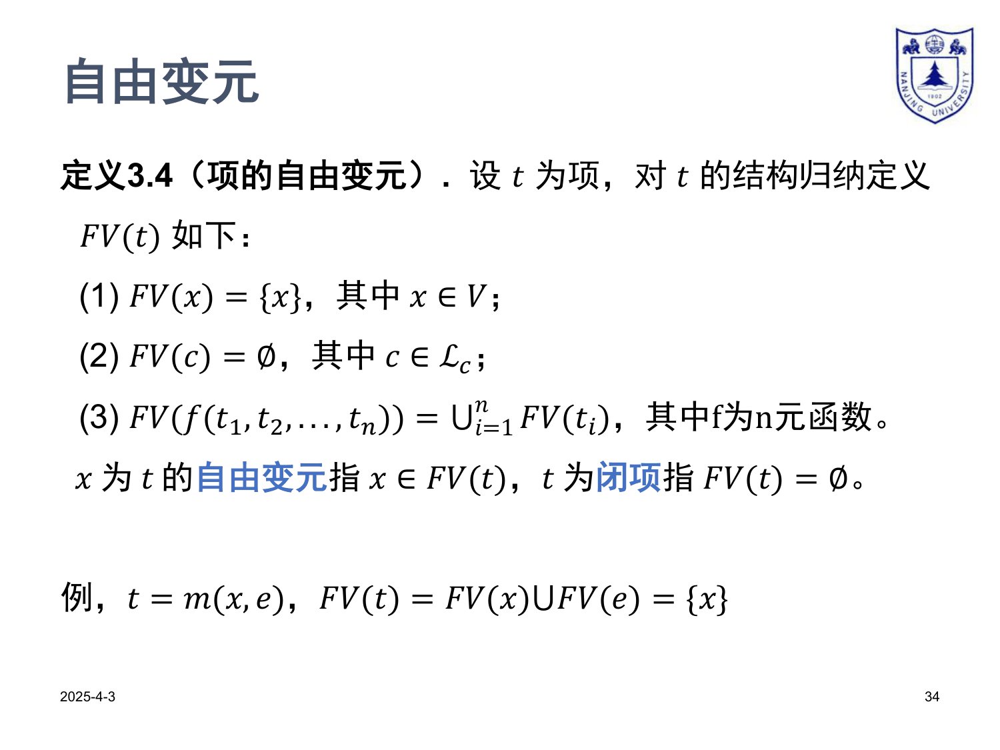
项里没有量词，所以项里的变元全是自由的。FV(t) 记"出现在 t 中的变元集合"。按结构归纳：
FV(x) = {x}，x ∈ V——单个变元的自由变元就是它自己FV(c) = ∅，c ∈ ℒc——常元里没有变元FV(f(t₁,…,tₙ)) = ∪ᵢ FV(tᵢ)——复合项的自由变元 = 各子项自由变元的并
两个名词
- x 是 t 的自由变元：
x ∈ FV(t) - t 是闭项（closed term）：
FV(t) = ∅，即 t 里没有任何变元（全由常元和函数符搭起来）
例
取 t = m(x, e)：FV(t) = FV(x) ∪ FV(e) = {x} ∪ ∅ = {x}。所以 t 的自由变元只有 x。
S(S(0))、m(e, e)——都不含变元。在语义层面，闭项指代某个确定的对象（如自然数 2）。定义 3.5：公式的自由变元 FV(A)
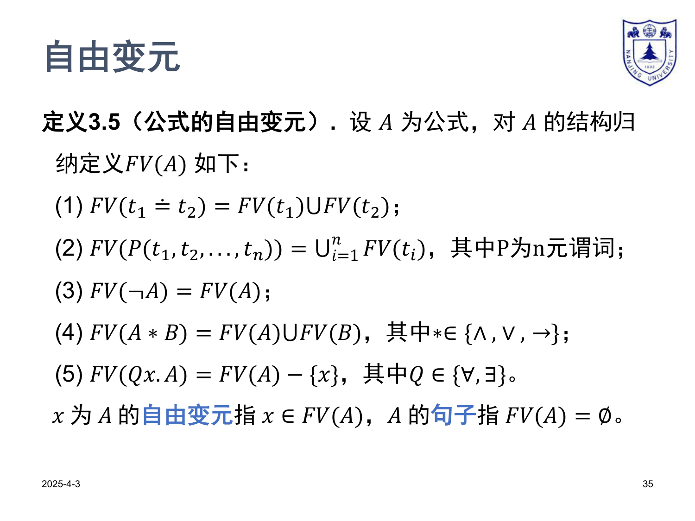
公式里有量词，会"吃掉"变元。按公式结构归纳：
FV(t₁ ≐ t₂) = FV(t₁) ∪ FV(t₂)FV(P(t₁,…,tₙ)) = ∪ᵢ FV(tᵢ)FV(¬A) = FV(A)——否定不影响FV(A ∗ B) = FV(A) ∪ FV(B)FV(Qx.A) = FV(A) − {x}——量词把 x 从自由变元集里移除！
关键就是第 5 条
量词 Qx. 绑定了变元 x。从此公式内部的 x 不再"自由"。这正是 D0 背景页里"for 循环吃掉循环变量"的形式化。
两个名词
- x 是 A 的自由变元：
x ∈ FV(A) - A 是句子（sentence）：
FV(A) = ∅，公式里所有变元都被量词绑住
同一变元可同时自由 & 约束
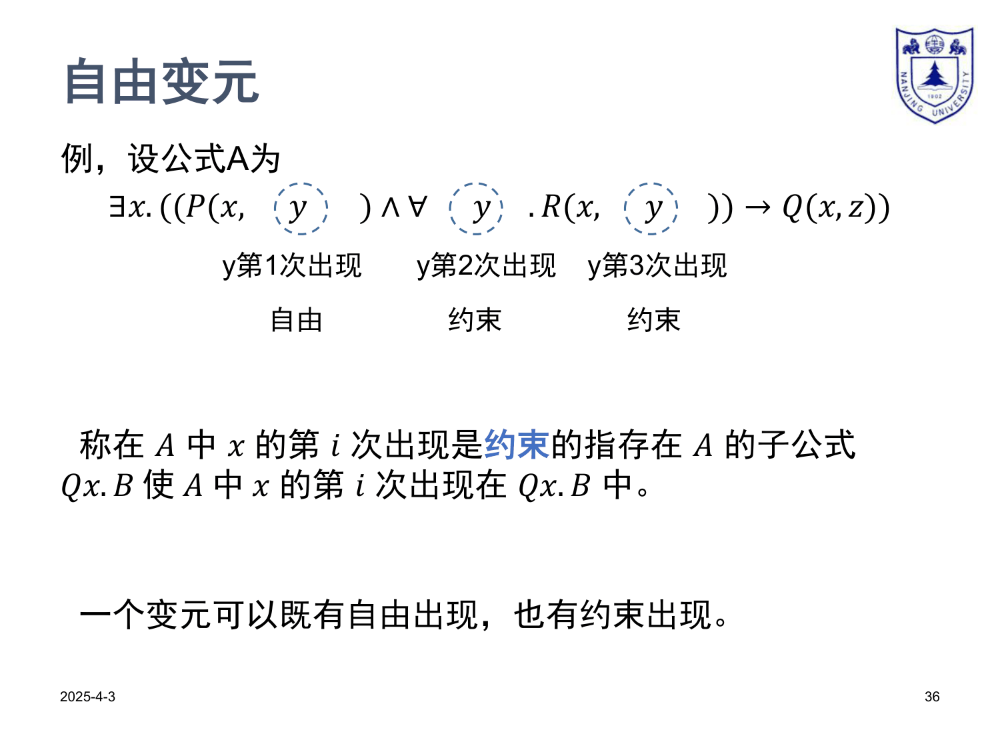
之前讲的"FV(A)"是整个公式视角下的自由变元集。但同一个变元符号 y 可以在公式不同位置出现，有的位置是自由出现，有的是约束出现。看图上的例子：
- 第 1 次 y 出现在
P(x, y)里——没被 ∀y 包住，自由出现 - 第 2 次 y 出现在
∀y——它就是量词本身（约束源） - 第 3 次 y 出现在
R(x, y)——在 ∀y 作用域内，约束出现
"约束出现"的形式定义
在 A 中 x 的第 i 次出现是约束的：存在 A 的子公式 Qx.B 使 A 中 x 的第 i 次出现在 Qx.B 中。
x（自由），又有 for x in ... 的循环变量（约束）。同名但不同身份。替换为什么会出事：变量捕获
替换 A[t/x] 表示"把 A 中所有自由出现的 x 替换成项 t"。直觉很简单，但在量词附近会出大事。看一个反例：
盲替的灾难
考虑公式 A = ∃y. (x ≐ y)。语义上读："存在 y 使 x = y"——对任何 x 都成立（取 y = x 即可）。
现在做替换 A[y/x]——把自由的 x 换成项 y。如果傻替：
这说"存在 y 使 y = y"——废话，永真。但意义和原来不一样了！原公式说"x 等于某个 y"，依赖 x 的取值；新公式什么也不依赖。
问题出在哪
我们替进去的 y 被外层的 ∃y 给"捕获"了——本来要传进来的"自由 y"被改造成"循环局部变量"。在编程里这叫变量捕获（variable capture），是宏展开的经典坑。
解药：先改名
替换前，把 ∃y 改名成 ∃z（z 是新变元）：
再替换：
现在意义没变："存在 z 使 y = z"——还是依赖 y 的值，正确。
定义 3.6：项的替换 s[t/x]
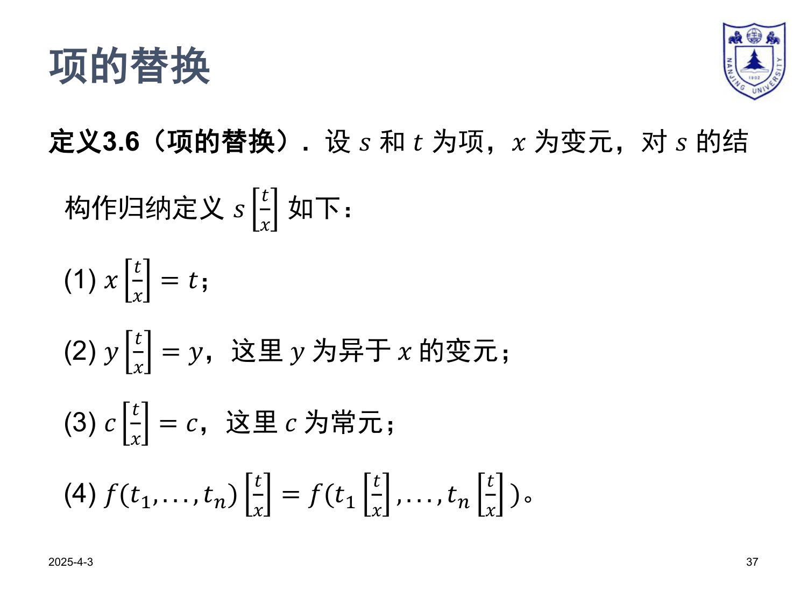
项替换 s[t/x]（书中写作 s[t∕x]，方括号分子分母式）= 把项 s 里所有变元 x 的位置都换成项 t。按 s 结构归纳定义：
x[t/x] = t——是 x 就换y[t/x] = y（y 是异于 x 的变元）——不是 x 不动c[t/x] = c（c 是常元）——常元不动f(t₁,…,tₙ)[t/x] = f(t₁[t/x], …, tₙ[t/x])——递归往子项里替
项替换实例
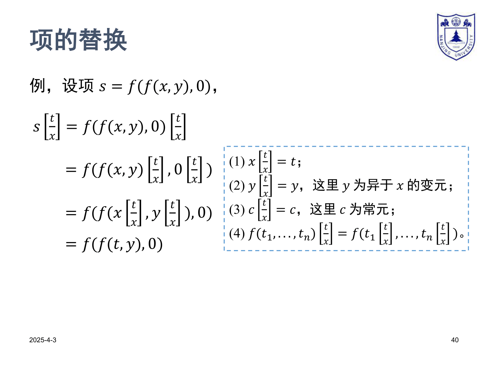
取 s = f(f(x, y), 0)，按定义一步步算 s[t/x]：
s[t/x] = f(f(x, y), 0) [t/x] // 整体 = f( f(x, y)[t/x], 0[t/x] ) // 规则 (4)：递归进子项 = f( f( x[t/x], y[t/x] ), 0 ) // 0 是常元，规则 (3) = f( f( t, y ), 0 ) // 规则 (1) (2)
最终：s[t/x] = f(f(t, y), 0)。
x 都被 t 替了，其他符号原封不动。这就是项替换的全部——朴素递归。定义 3.7：公式替换 A[t/x]（第 1–4 条）
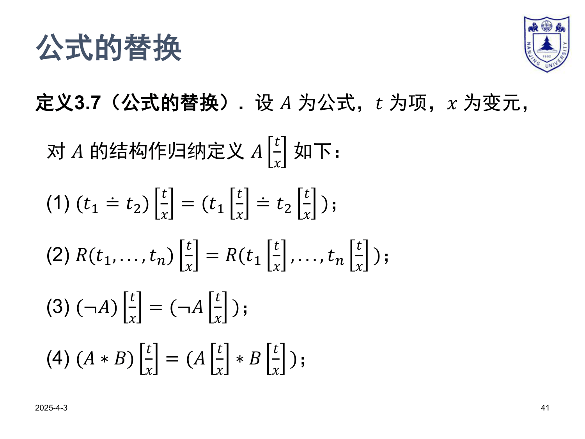
公式替换 A[t/x] = 把公式 A 中所有自由出现的 x 换成 t。按 A 结构归纳，先看前 4 条（不涉及量词）：
(t₁ ≐ t₂)[t/x] = (t₁[t/x] ≐ t₂[t/x])——分别在两个项里替R(t₁,…,tₙ)[t/x] = R(t₁[t/x], …, tₙ[t/x])(¬A)[t/x] = ¬(A[t/x])(A ∗ B)[t/x] = (A[t/x] ∗ B[t/x])
这四条朴素——遇到联结词就递归下去，遇到项就用定义 3.6（项替换）。下页才是关键的量词情形。
定义 3.7：公式替换（第 5–7 条 · 含改名）
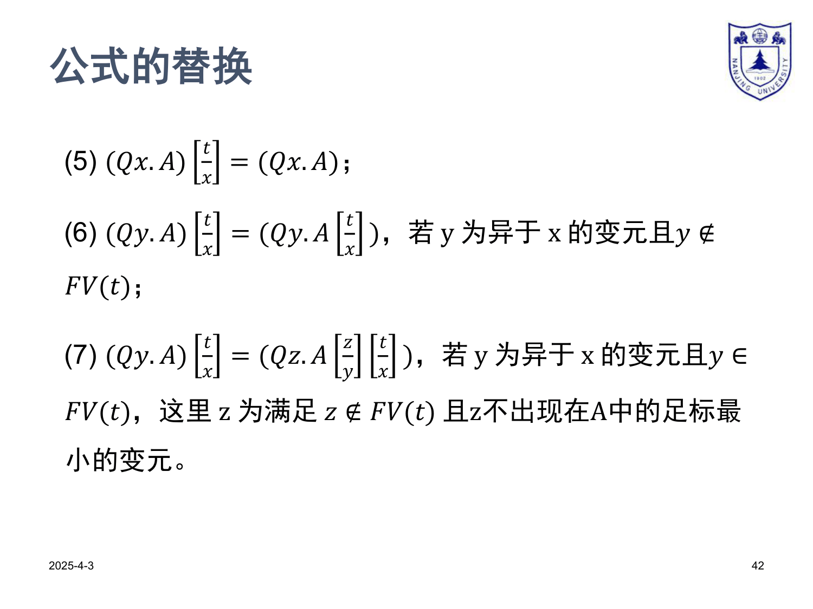
遇到量词 Qx.A（Q ∈ {∀, ∃}），分三种情形：
(5) 量词绑定的变元 = 被替换变元
意思：如果量词正好绑定 x，那 A 里所有 x 都是约束出现，不动。整个公式不变。
(6) 量词绑定异于 x 的变元 y，且 y 不在 t 中自由出现
把替换递归进 A 即可。无碰撞。
(7) 量词绑定 y，但 y ∈ FV(t) —— 必须先改名
这里 z 是足标最小的新变元（不在 FV(t)，也不在 A 中出现）。步骤：
- 先把 A 中的 y 改名成 z（避免捕获）
- 再把 x 替换成 t
替换例 1：约束变元不变（规则 5）
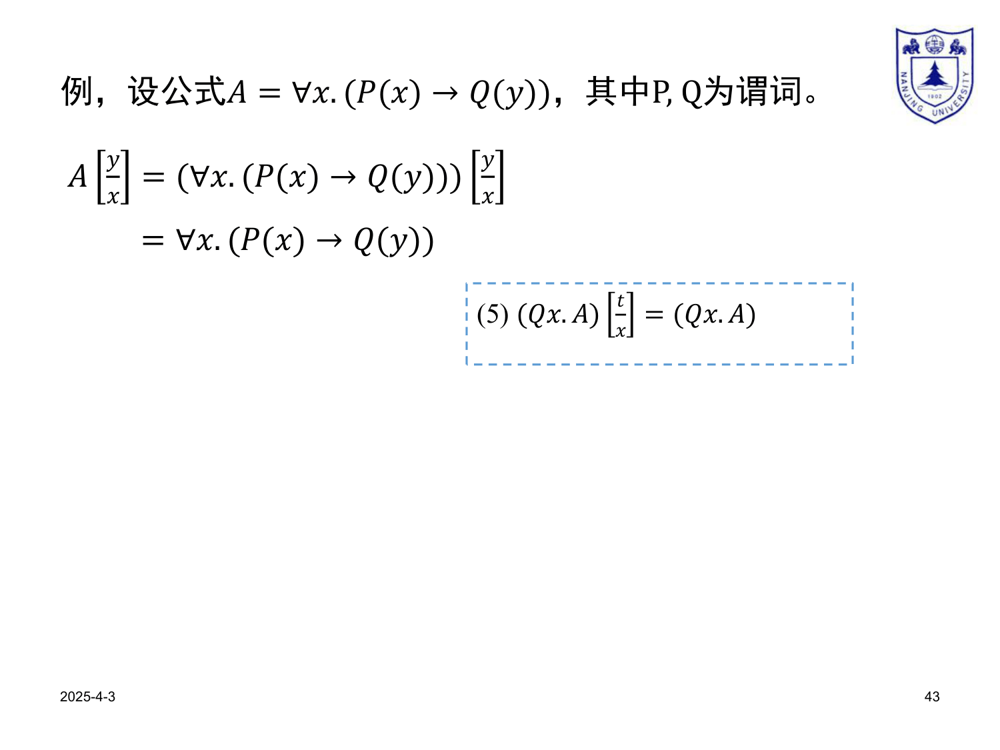
设 A = ∀x. (P(x) → Q(y))。算 A[y/x]：
A[y/x]
= (∀x. (P(x) → Q(y))) [y/x]
= ∀x. (P(x) → Q(y)) // 规则 (5)：量词绑定的就是 x，整个公式原样
注意 A 里的两个 x 都被 ∀x 绑住——是约束出现。替换只动自由出现的 x，所以根本不动。结果保持原样。
替换例 2：必须改名（规则 7）
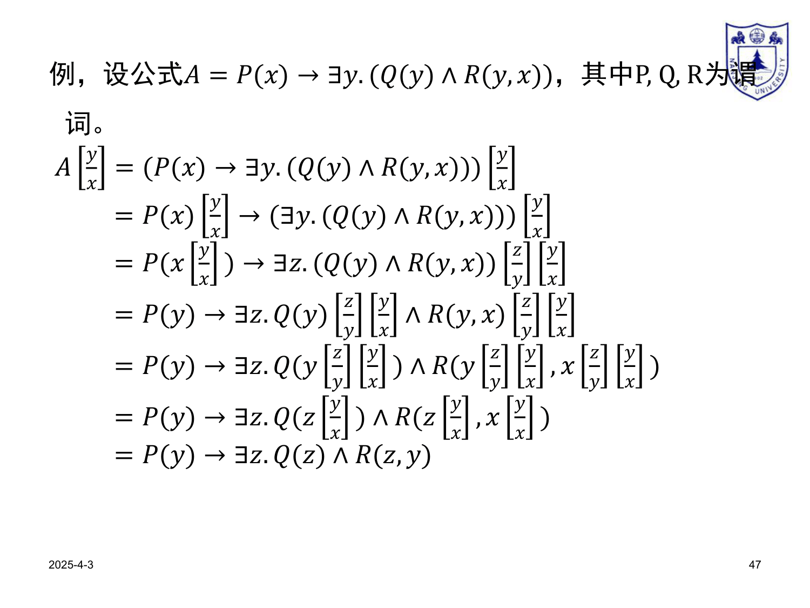
设 A = P(x) → ∃y. (Q(y) ∧ R(y, x))，算 A[y/x]。替换的项 t = y，要把 A 中自由的 x 全换成 y。但 A 里有 ∃y——会捕获！
A[y/x] = (P(x) → ∃y. (Q(y) ∧ R(y, x))) [y/x] = P(x)[y/x] → (∃y. (Q(y) ∧ R(y, x))) [y/x] // 规则 (4) = P(y) → (∃y. (Q(y) ∧ R(y, x))) [y/x] // 用项替换 // 量词绑定的 y ∈ FV(t) = FV(y) = {y} → 规则 (7) 必须改名 = P(y) → ∃z. (Q(y) ∧ R(y, x)) [z/y][y/x] // 先把里面所有 y 改名成 z（z 是不在 FV(y) 也不在 A 中的最小新变元） = P(y) → ∃z. (Q(y)[z/y][y/x] ∧ R(y, x)[z/y][y/x]) = P(y) → ∃z. (Q(z)[y/x] ∧ R(z, x)[y/x]) // y → z = P(y) → ∃z. (Q(z) ∧ R(z, y)) // x → y
结果：A[y/x] = P(y) → ∃z. (Q(z) ∧ R(z, y))
对比：如果不改名（错误做法）
盲替会得到：P(y) → ∃y. (Q(y) ∧ R(y, y)) ——里面 R(y, y) 的第二个 y 本来是想代表"外面传进来的 y"，但被 ∃y 捕获了，含义完全变了。
替换的 5 条注记
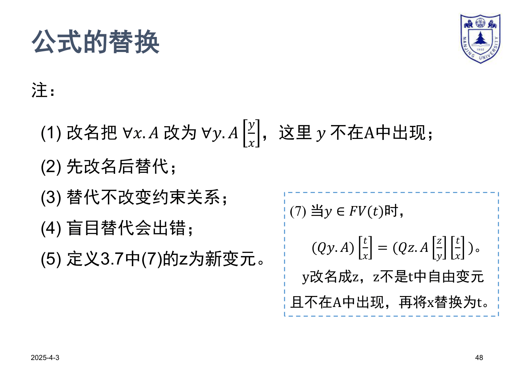
- 改名：把
∀x.A改为∀y. A[y/x]，其中 y 不在 A 中出现。改名不改变公式的"意义"，只换符号。 - 先改名后替代：替换流程严格分两步——避免捕获要先重命名，再代入。
- 替代不改变约束关系：替换前是自由 x 的位置，替换后位置由 t 占据；约束 x 仍然是约束的，未受影响。
- 盲目替代会出错：D1 背景页和 p47 已经反复演示。
- 定义 3.7 中的 z 是新变元，取"足标最小"使结果唯一。
回头看：整章语法层完整地图
到这里，本章语法机器全部装完。把零件再过一遍：
| 层次 | 对象 | 怎么定义 | 核心定理 |
|---|---|---|---|
| 1 | 字母表 | 定义 3.1：逻辑符 + 非逻辑符 | — |
| 2 | 项 | 定义 3.2：变元 / 常元 / f(t,…) | 定理 3.8：结构唯一 |
| 3 | 公式 | 定义 3.3：原子公式 + 联结词 + 量词 | 定理 3.9：结构唯一 |
| — | 自由变元 | 定义 3.4 / 3.5 | 判断闭项 / 句子 |
| — | 替换 | 定义 3.6 / 3.7 | 盲替会出错→规则 7 改名 |
| — | 归纳法 | 结构归纳（对项/对公式） | 证明所有项/公式有性质 |
接下来两页的两条定理在说什么
- 定理 3.8（项的结构唯一）：每个项恰好是变元、常元、或
f(...)之一，且这种形式唯一。意味着语法树确定。 - 定理 3.9（公式的结构唯一）：每个公式恰好是 8 种形式之一（≐ / 谓词 / ¬ / ∧ / ∨ / → / ∀ / ∃），且形式唯一。
"形式唯一"是接下来一切归纳证明的合法性前提——保证递归定义无歧义。
定理 3.8：项的结构唯一
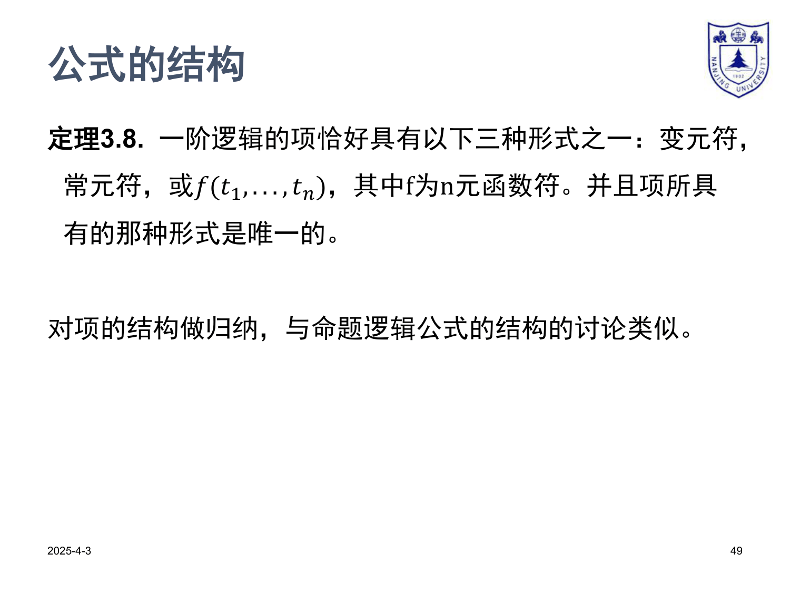
定理 3.8：一阶逻辑的项恰好具有以下三种形式之一：
- 变元符
- 常元符
f(t₁,…,tₙ)，其中 f 为 n 元函数符
并且项所具有的那种形式是唯一的。
"唯一"意味着
- 项
x₀既不会同时被读成"常元"，也不会被拆成f(...)——它就是变元。 - 项
f(x, y)不会被错读成"由变元 f 和某种神秘东西拼起来"——它就是函数 f 应用到 (x, y)。
f(t) 既可拆成 "f 加 (t)" 又能拆成别的，递归定义就有歧义。定理 3.9：公式的结构唯一
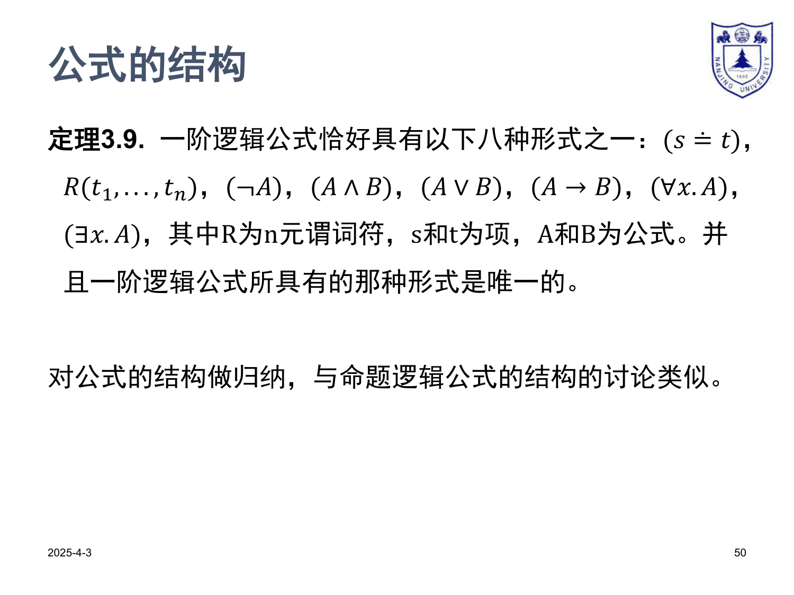
定理 3.9：一阶逻辑公式恰好具有以下八种形式之一：
(s ≐ t)R(t₁,…,tₙ)(¬A)(A ∧ B)(A ∨ B)(A → B)(∀x.A)(∃x.A)
并且公式所具有的那种形式是唯一的。
这条定理为后面铺路
- 对公式归纳证明性质时，按这 8 种情形穷举一遍就完整
- 语义解释（下一章）按这 8 种情形分别定义"为真"的条件，不会冲突
- 替换、自由变元等递归定义可以放心写
小结：一阶逻辑的语法
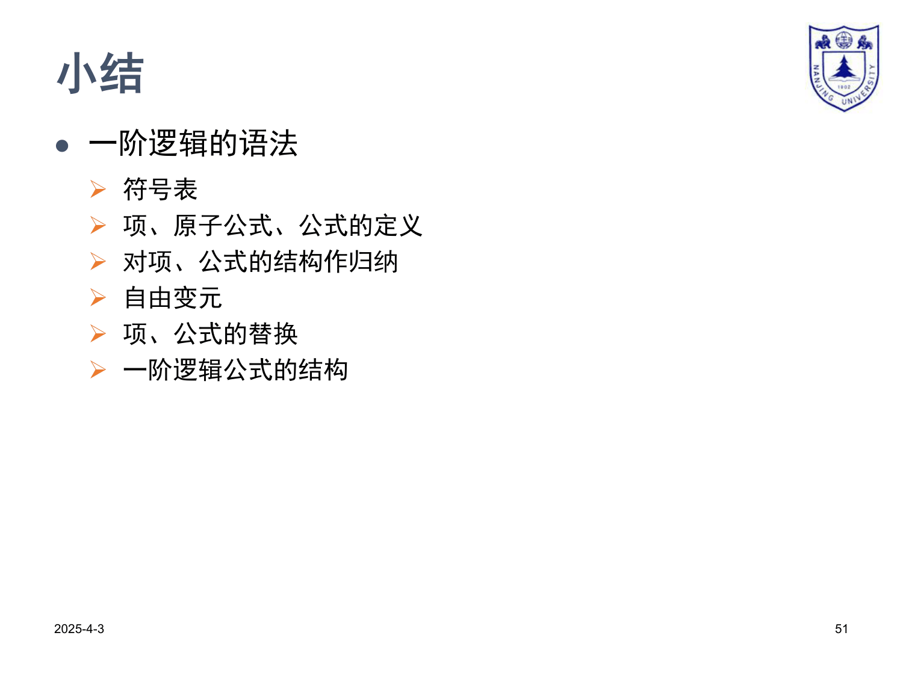
本章学了什么
- 符号表（字母表）：逻辑符（共享）+ 非逻辑符（各自定）
- 项、原子公式、公式的定义：三种等价写法（归纳/闭包/BNF）
- 对项、公式的结构归纳：证明万能套路
- 自由变元：FV(t)、FV(A)、闭项、句子；自由 vs 约束出现
- 项、公式的替换：定义 3.6 / 3.7，关键是规则 7 的改名
- 结构唯一性：定理 3.8 / 3.9，让一切递归定义合法
下章预告
语义。给定一个"结构"（数学模型，如自然数集 + 算术运算），怎么把每个项映射到具体对象，把每个公式映射到真/假？以及"语义后承 ⊨"的定义。
再后面
对应 G' 的一阶版本——一阶自然推理系统。会有命题逻辑里没有的新规则：∀-消去、∀-引入、∃-引入、∃-消去——它们都用到本章的"自由变元"和"替换"。